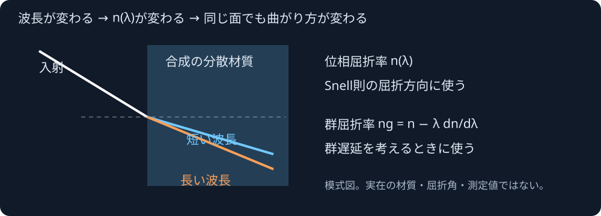

波長を変えると、屈折率も変わる
同じ材質でも波長ごとに光の曲がり方が変わり、レンズの色収差につながります。このラボは、指定した波長帯の全体に対する屈折率と微分の包含区間を実C++ WebAssemblyで求めます。
表示する係数は独自の合成例です。実在するガラスの測定値や製品処方ではありません。分散の計算核を調べる画面で、レンズ画像や色収差を描画する完成機能ではありません。
計算核を読込み中…
波長帯ごとの包含区間
青: 位相屈折率 n、紫: 群屈折率 ng。各矩形はその小区間全体の包含で、点を結んだ測定曲線ではありません。橙: 成功値のない帯。縦幅の描画は最小1pxに拡大します。全範囲の照会が幅制限で未解決でも、小区間は解決できる場合があります。
- 指定した全波長帯の位相屈折率 n
- —
- dn/dλ [1/m]
- —
- 群屈折率 ng
- —
—
—
原入力・全帯の結果・32小区間のJSON
結果なし
曲がる方向にはn、群遅延にはng

ここでλは真空中の波長です。Cauchyは n=A+B/λ²+C/λ⁴、Sellmeierは n²=1+ΣBⱼλ²/(λ²−Cⱼ) と定義しています。解析微分から ng=n−λ·dn/dλ を求めます。位相屈折率と群屈折率を同じ数として使い回しません。
係数はSIで入力します。µm単位の式から取り込む場合、CauchyのBは10⁻¹²、Cは10⁻²⁴、SellmeierのCは10⁻¹²を掛けてm単位へ変換します。カタログの空気に対する相対屈折率を、真空基準の絶対屈折率として扱うこともできません。実データの取り込みと基準の変換は後続です。
この包含は指定した数式とdouble係数に対するものです。測定誤差や係数の同定誤差、温度、吸収、異方性、散乱、回折や干渉は保証に含みません。入力欄のnmからmへの変換にも丸めがあり、変換後に渡した値はJSONで確認できます。
モデル・誤差・解析例・検証契約 · レンズ面の幾何 · 単一界面の反射・屈折
調査資料: SCHOTT TIE-29、RP Photonics Encyclopedia, Dr. Rüdiger Paschotta: Group Index / Sellmeier Formula。資料の図・表・材質係数・コードは取り込んでいません。